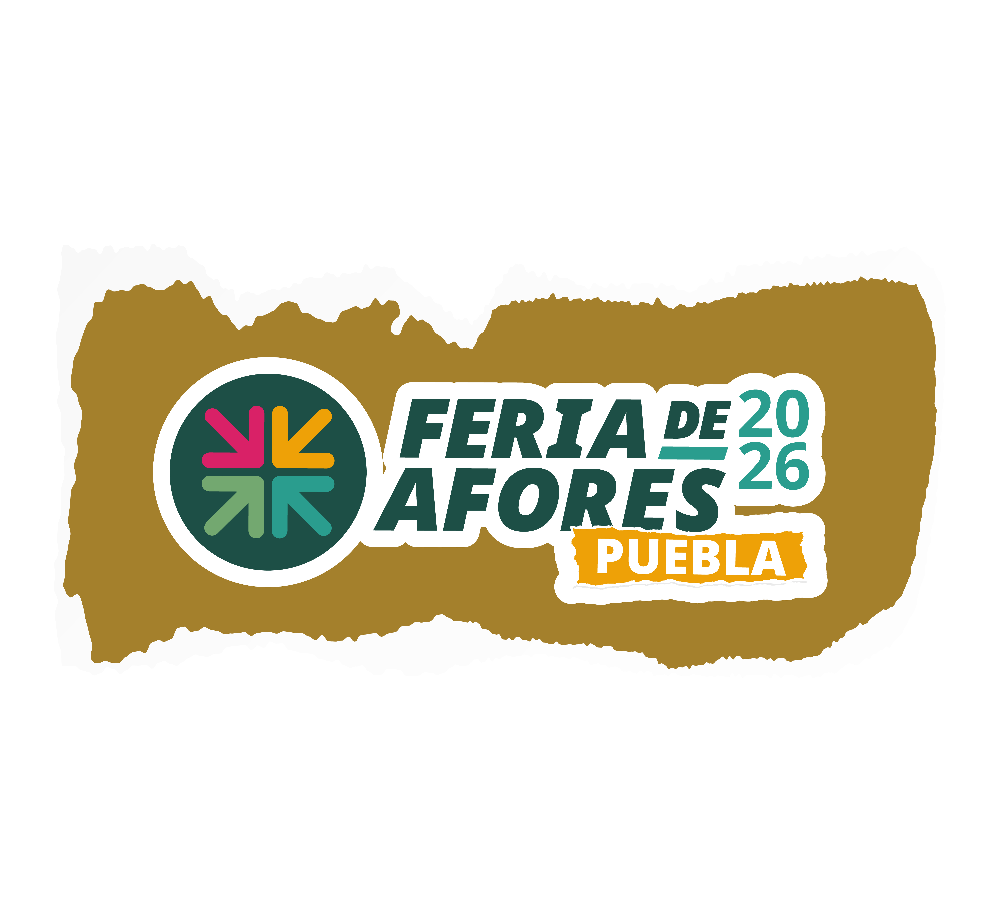

La Feria de Afores llega por primera vez a Puebla
Del 29 al 31 de mayo, el Zócalo poblano acercó trámites, servicios y cultura previsional a las y los trabajadores de la entidad
Por primera vez, la Feria de Afores llegó a Puebla. Del 29 al 31 de mayo, el Zócalo de la
capital del estado se convirtió en un punto de encuentro entre las y los trabajadores y su
ahorro para el retiro, con acceso gratuito a más de 40 trámites y servicios relacionados con la
cuenta individual, orientación especializada y actividades para fortalecer la cultura
previsional.
Organizada por la Comisión Nacional del Sistema de Ahorro para el Retiro (CONSAR), la Feria
reunió en un mismo espacio a las 10 Afores y a instituciones federales y estatales vinculadas al
ahorro para el retiro, entre ellas el IMSS, el ISSSTE, el INFONAVIT, el FOVISSSTE, la CONDUSEF,
el SAT, la PROFEDET, la PRODECON, FINABIEN y CETES Directo. La sede no fue casual: Puebla ocupa
el cuarto lugar nacional en número de cuentas individuales, con más de 4.7 millones.
Durante la inauguración, la subsecretaria de Hacienda y Crédito Público, María del Carmen
Bonilla Rodríguez, recordó que el Sistema de Ahorro para el Retiro administra recursos por más
de 8.7 billones de pesos —cerca de una cuarta parte del PIB— y que en 2025 registró plusvalías
históricas superiores a un billón de pesos. Por su parte, el presidente de la CONSAR, Julio
César Cervantes Parra, subrayó que estos recursos pertenecen a las personas y constituyen su
patrimonio a lo largo de la vida laboral; por ello invitó a mantener actualizada la cuenta
individual, registrar beneficiarios y consultar periódicamente el estado de cuenta para tomar
decisiones informadas.
El balance de los tres días confirmó el interés de la población poblana. La Feria registró
22,118 ingresos y 19,277 interacciones totales, de las cuales 18,082 correspondieron a
atenciones directas en los stands. La afluencia creció jornada con jornada, con el fin de semana
como el periodo de mayor actividad. El Stand CONSAR sumó 1,088 atenciones, con un avance
sostenido a lo largo de los tres días: 252 el viernes, 341 el sábado y 495 el domingo.
Más allá de los trámites, la Feria fue también un espacio de educación financiera para todas las
edades. La activación "Pinta cochinitos" se ubicó entre las más concurridas, con más de 500
participantes, en su mayoría familias y con una destacada presencia femenina, acercando de forma
lúdica el hábito del ahorro a las nuevas generaciones. En conjunto, las activaciones crecieron
23% respecto a la edición anterior, celebrada en Guadalajara en 2025.
Con esta primera edición en Puebla, la CONSAR reafirma su compromiso de acercar el Sistema de
Ahorro para el Retiro a las personas, fortalecer la cultura previsional y promover decisiones
informadas que protejan el patrimonio pensionario de las y los trabajadores.
Conoce más sobre la Feria de Afores👉
